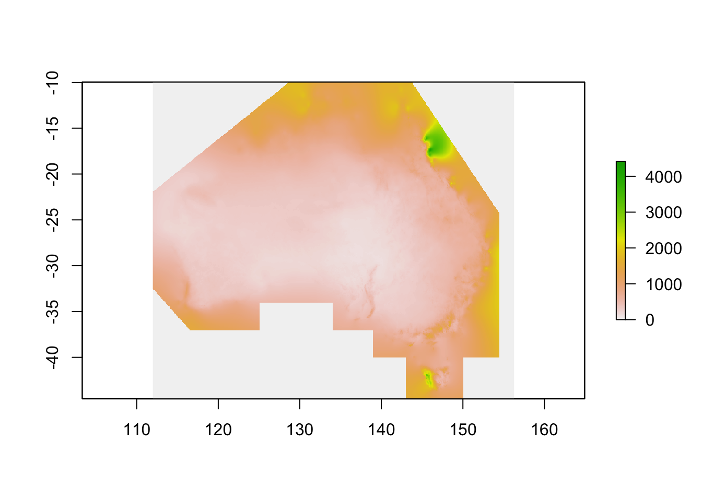
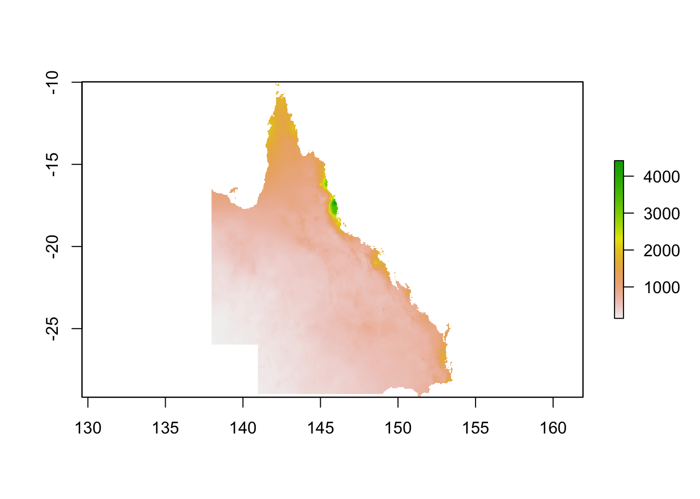
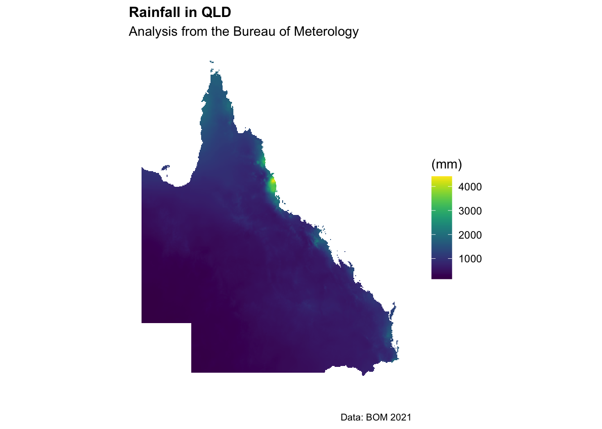
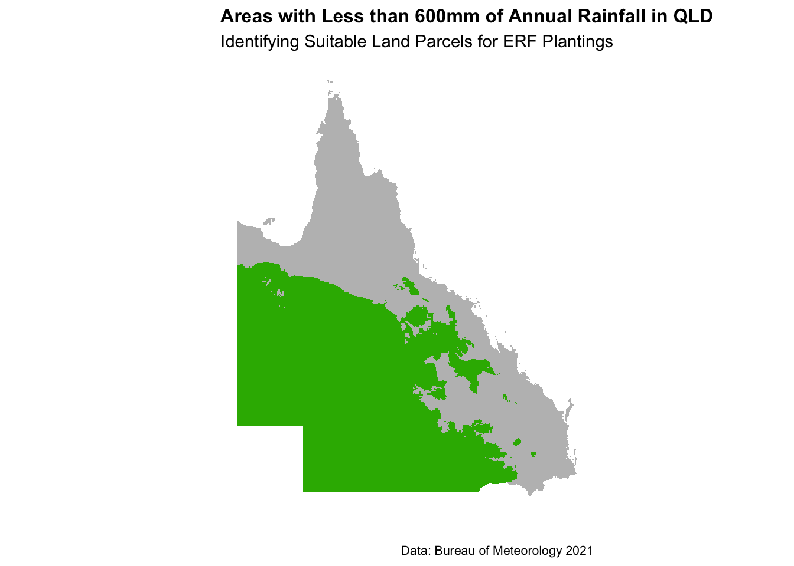

# Core tidyverse packages (includes ggplot2, dplyr, tidyr, broom, etc.)
library(tidyverse)
# Spatial data handling
library(sf) # Modern replacement for sp + rgdal
library(raster) # Working with raster data
library(ncdf4) # NetCDF file handling
library(leaflet) # Interactive maps
# Mapping & Visualization
library(ggspatial) # Adds scale bars, north arrows, etc.
# library(tmap) # Thematic mapping
library(ggmap) # Google Maps integration
library(rasterVis) # Raster visualization
library(viridis) # Color scales for ggplot2 and rasterVis
library(RColorBrewer) # Color palettes
# Other Utilities
library(strayr) # ABS map data (runapp-aus/strayr)Raster data
Raster data (sometimes referred to as gridded data) is a type of spatial data that is stored in a grid rather than a polygon. Imagine a chessboard of individuals squares covering the Australian landmass compared to 8 different shapes covering each state and territory.
The nice thing about gridded data is that all the cells in the grid are the same size - making calculations much easier. The tricky part is those squares are overlayed on a (very roughly) spherical earth. We’ll have to think about mapping projections along the way.
Let’s get started. First up we need to load some spatial and data crunching packages.
Import raster
Next, we want to import annual rainfall data from github (original source available from the Bureau of Meterology)
rainfall <- raster("https://raw.github.com/charlescoverdale/ERF/master/rainan.txt")
plot(rainfall)
Straight away we see this is for the whole of Australia (and then some). We’re only interested in what’s going on in QLD… so let’s crop the data down to scale. For this we’ll need to import a shapefile for QLD.
The easiest way to do this is using the strayr package, which pulls official ABS boundary files on demand via read_absmap().
# Import a polygon for the state of Queensland
QLD_shape <- strayr::read_absmap("state2016") %>%
filter(state_name_2016 == "Queensland")Choosing geographies
We have raster data for the entirety of Australia (and then some as it’s pulled from one of the BOMs satellites). This is a bit messy to work with - so let’s crop the rainfall data from the entire Australian continent to just Queensland.
# Crop data
r2 <- crop(rainfall, extent(QLD_shape))
r3 <- mask(r2, QLD_shape)
plot(r3)
]Next up, let’s transform the cropped raster into a data frame that we can use in the ggplot package.
r3_df <- as.data.frame(r3, xy = TRUE)
r3_df <- r3_df %>%
filter(rainan != "NA")
ggplot() +
geom_tile(data = r3_df, aes(x = x, y = y, fill = rainan)) +
scale_fill_viridis() +
coord_equal() +
theme(legend.position = "bottom") +
theme(legend.key.width = unit(1.2, "cm")) +
labs(
title = "Rainfall in QLD",
subtitle = "Analysis from the Bureau of Meterology",
caption = "Data: BOM 2021",
x = "",
y = "",
fill = "(mm)"
) +
theme_minimal() +
theme(axis.ticks.x = element_blank(), axis.text.x = element_blank()) +
theme(axis.ticks.y = element_blank(), axis.text.y = element_blank()) +
theme(panel.grid.major = element_blank(), panel.grid.minor = element_blank()) +
# theme(legend.position = "bottom")+
theme(plot.title = element_text(face = "bold", size = 12)) +
theme(plot.subtitle = element_text(size = 11)) +
theme(plot.caption = element_text(size = 8))
Excellent, we’ve got a working map of rainfall in Queensland using the ggplot package. We’ll tidy up the map also and add a title and some better colours.
Analysis with raster data
For our first piece of data analysis, we’re going to look at areas with less than 600mm of annual rainfall. How many of our data points will have less than 600mm of rain? Let’s take a look at the data distribution and find out.
ggplot(r3_df) +
geom_histogram(aes(rainan), binwidth = 1, col = "darkblue") +
labs(
title = "Distribution of annual rainfall in QLD",
subtitle = "Data using a 5x5km grid",
caption = "Data: Bureau of Meterology 2021",
x = "Rainfall (mm)",
y = "",
fill = "(mm)"
) +
theme_minimal() +
theme(panel.grid.major = element_blank(), panel.grid.minor = element_blank()) +
theme(legend.position = "none") +
theme(plot.title = element_text(face = "bold", size = 12)) +
theme(plot.subtitle = element_text(size = 11)) +
theme(plot.caption = element_text(size = 8))
Interesting. The data is heavily right tailed skewed (the mean will be much higher than the median)… and most of the data looks to be between 0-1000mm (this makes sense).
Let’s create a ‘flag’ column of 0’s and 1’s that shows when a data point is less than 600mm.
# Define flag column and colors
r3_df <- r3_df %>%
mutate(flag_600mm = as.factor(ifelse(rainan <= 600, 1, 0)))
flag_colours <- c("grey", "#2FB300")
# Plot
ggplot(r3_df, aes(x = x, y = y, fill = flag_600mm)) +
geom_tile() +
scale_fill_manual(values = flag_colours) +
coord_equal() +
theme_minimal() +
labs(
title = "Areas with Less than 600mm of Annual Rainfall in QLD",
subtitle = "Identifying Suitable Land Parcels for ERF Plantings",
caption = "Data: Bureau of Meteorology 2021",
x = "",
y = "",
fill = "(mm)"
) +
theme(
axis.ticks = element_blank(),
axis.text = element_blank(),
panel.grid = element_blank(),
legend.position = "none",
plot.title = element_text(face = "bold", size = 12),
plot.subtitle = element_text(size = 11),
plot.caption = element_text(size = 8)
)
Making an interactive map
The static map above is good… but an interactive visual (ideally with place names below) is better. The leaflet package is exceptional here.
# This code creates an interactive leaflet map. It is commented out to allow the html version of RCCD2e to render online.
# leaflet() %>%
# addTiles() %>%
# addRasterImage(r5, opacity = 0.5) %>%
# addLegend(pal = colorNumeric("viridis", values(r5)), values = values(r5))